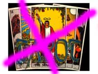
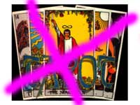
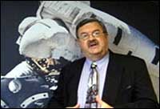

Nos dijeron que la Unión Estadounidense por las Libertades Civiles (ACLU) inició una demanda federal en contra de la ciudad de Dickson, Tennessee, en representación de una adivina llamada Beth Daly, arguyendo que los funcionarios de la ciudad habían violado su derecho a la libre expresión al prohibirle que vendiera sus servicios de adivinación. El director de la ACLU dijo que la Sra. Daly es una ciudadana respetuosa de la ley (por qué esto forma parte del argumento, no sabría decirlo) quien dejó de vender lecturas de tarot de $25 en la tienda Curiosity Corner New Age Shop, donde se le informó que era ilegal. Daly acudió entonces a la ACLU para pedirle ayuda para cambiar la ley, pero los funcionarios de Dickson no respondieron favorablemente.
La ciudad de Dickson prohíbe que cualquiera haga dinero por medio de la adivinación. La ordenanza, modificada en 1980, hace ilegal para “cualquier persona trabajar en el negocio de, incitar a actuar como, o ejercer el oficio de adivinador, clarividente, hipnotista, espiritista, lector de palmas, frenólogo u otro místico imbuido de poderes sobrenaturales”. Me parece abarcativo. La demanda, la primera de su tipo en el estado de Tennessee, pide que la ordenanza sea declarada inconstitucional y que se le prohíba a la ciudad poner en práctica la prohibición.
Ahora bien, suelo tener diferencias de opinión con la ACLU, ninguna de las cuales hace falta mentar aquí. En una ocasión en Nueva Jersey, hace años, la organización apoyó mi derecho a la libre expresión cuando me atreví a expresar ciertos hechos preocupantes sobre un departamento local de policía de allí, por lo que, por supuesto, estoy agradecido. Creo que la situación con la Sra. Daly debería reducirse a si ella estaba brindando un servicio genuino a sus clientes, o simplemente presentándoles las mismas viejas paparruchas. Si la ACLU tiene tanto interés en defender místicos, ¿también considerarían defender al clérigo o ministro local que ofrezca interceder ante el deseo de una deidad mediante la oferta de plegarias?
¿Quizá el hecho de que no vio venir todo este revuelo puede ser evidencia de que la Sra. Daly no es muy psíquica que digamos?
Mi buen amigo James Oberg (www.jamesoberg.com) recibió un comentario de alguien que lo escuchó en un programa de radio. Quien le escribió había aceptado la afirmación, durante la farsa sobre el no aterrizaje en la luna propalada por FOX-TV, de que las cámaras de vídeo utilizadas en la Luna tendrían que ser usadas a 300 grados Fahrenheit, una premisa ridícula, tal como James señala. Creo vale la pena repetir su respuesta aquí. Jenny Dubby escribió al programa. La puntuación, etc, tal como en el original 1:
No escuché nada del Sr. Oberg que pruebe que el hombre fue a la luna. Criticó a alguien que llamó por usar datos de la televisión. Le pedí a muchos, muchos que me dijeran una cosa que indique que el hombre fue a la luna incluido usted. NASA respondió por escrito “Salió en TV para que el mundo lo viera”. Hace poco tuve la oportunidad de preguntar por qué uno de los astronautas no levantó el vehículo (un carro de 420 libras) sobre su cabeza. Muy convincente. Me dijeron que temían que el pudiera romperlo y dañarlo. ¡Dicen que lo dejaron ahí como basura!!! Intenté por mas de 2 años, con la ayuda de mi diputado obtener las espesificasiones de la cámara que dicen que sacó las fotos del ML despegando de la luna. Por lo que sé no hubo ni hay ninguna que funcione en el vacío a los 300 grds.
El Sr. Oberg le respondió:
En referencia con su carta basada en mi aparición radial en “Coast-to-Coast” anoche: ¿Por qué una cámara tendría que funcionar a 300 grados? La temperatura de la superficie en el área “matutina” donde los astronautas aterrizan siempre era de alrededor de 0 grados Fahrenheit. No llegó hasta 250 grados F hasta una semana después, y los hombres ya hacía bastante que se habían ido por entonces.
Las cámaras estaban en lo que esencialmente eran “termos” (aislamiento por vacío) y pintadas de blanco para reflejar la luz del sol. Nunca se calentaron. Lo mismo para los trajes de los astronautas; el calor que tenían que eliminar era de las actividades físicas de los astronautas (y del uso de algo de electricidad).
¿Trescientos grados? Ese es un mito pensado para impresionar a la gente que no entiende de física. Lo usa la gente que quiere engañar y tienen poco respeto por su inteligencia y sentido común; quizá tienen razón, a juzgar por su carta.
En lugar de exigirle a otros que ELLOS le den a USTED información que usted desea, pruebe que realmente la desea aprendiendo cómo encontrarla usted misma. De otro modo se parece a un niño amenazando retener la respiración hasta que le den lo que quiere.
Libérese con la verdad. La está esperando. Sólo tiene que buscarla con una mente abierta.
Bien dicho, James. Como me pasa con tantas cosas que dices, me gustaría haberlo dicho yo…
Un artículo aparecido en The Scientist (una revista bimensual que proporciona información actual a los “científicos de la vida”) ha alarmado a nuestro lector Michael Watters, y con razón. ¡Trata seriamente la aplicación de la noción del “feng shui” al diseño de laboratorios!
Señalando que hay “laboratorios húmedos y sin ventanas, con paredes deslucidas y sin pintar hechas de hormigón que le dan un aspecto de los años ‘60 al ambiente laboral”, el artículo advierte que esto “puede ser una gran desventaja para conseguir personal”. “Recibí un visitante de Europa preguntándome por qué mi edificio parecía una prisión”, dice un empleado de laboratorio según una cita. “Esta no es la impresión que yo esperaba que se llevara de vuelta a Austria”.
La necesidad de “hacer sus laboratorios más amenos visual y espiritualmente” puede ser evidente, estoy de acuerdo. Pero recurrir al feng shui, el antiguo arte chino de la “ubicación”, es ridículo. No se necesitan ideas pre-medievales para usar el sentido común. “En lo personal creo que el feng shui es basura”, dice Charles Nicolet, administrador edilicio del Centro de Biotecnología de Wisconsin en Madison. “Tengo la firme creencia de que si algo no puede ser tratado científicamente, probablemente no vale la pena creer en ello.”
Pero el artículo desestima esa actitud de mentalidad cerrada y continúa citando a la “practicante certificada” de feng shui Carol Olmstead, quien afirma que puede aplicarse esta disciplina al diseño de laboratorios. Ella dice que intenta crear entornos de laboratorio
… en los cuales la energía positiva, llamada ch’i, pueda fluir libremente a través de la habitación. Para que esto funcione, el ch’i debe poder atravesar la puerta, de modo que hay que quitar el desorden. El desorden es el mayor problema que encuentro con todos mis clientes. Representa decisiones pospuestas y la incapacidad de avanzar, evitando que la energía fluya y el logro de lo que se puede lograr. Los laboratorios sin ventanas […] crean ch’i estancado, a través de un balance de la energía que proviene de la noche y el día. Muchos laboratorios sin luz natural tienen demasiado yin ch’i (energía femenina) creando una sensación de frialdad, incomodidad y fatiga.
Explica “The Scientist”:
Tales estados de ánimo pueden ser contrarrestados trayendo el exterior dentro del laboratorio. Ubicar símbolos de la naturaleza en una habitación ejemplifica las reglas del feng shui, las cuales dictan que los elementos madera, fuego, tierra, metal y agua deben estar balanceados dentro de un espacio. Cada elemento se asocia con colores y formas particulares, y establecer un balance entre ellos puede asemejarse a la dinámica del juego “piedra, papel y tijeras”. “El fuego disminuye al metal derritiéndolo”, dice Olmstead. “El agua hace lo mismo oxidándolo”.
¿Y ésta es una revista de ciencia? ¿Por qué y cuándo abandonaron la ciencia en favor de la fantasía? ¿El ch’i no pasa por la puerta? ¿Hay un charco de “ch’i estancado” aquí? ¿Qué basura es ésta? Claro, los buenos colores y el mobiliario invitador y una buena vista del exterior pueden producir en su conjunto un lugar de trabajo placentero, pero ¿no escuché alguna vez que había unos 107 elementos, y que hemos descartado la idea de que la tierra, el aire, el fuego y el agua son todo lo que existe? Incluso esta lista “mejorada” (madera, fuego, tierra, metal y agua) no parece aceptable, por lo que he oído. Pero ¿yo qué voy a saber? No soy un escritor de The Scientist.
La revista nos dice que Glenn Takayama, presidente de Lab Vision, en Freemont, California, es ahora un creyente en el feng shui luego de contratar a la “experta” Deborah Gee, a quien vio en un especial de televisión de PBS; dice que consultarla ha tenido un notable efecto en su laboratorio y su oficina. “Sencillamente hay un sentimiento diferente aquí, casi puede sentirse la diferencia de energía”, dice. “Incluso mis empleados me dicen que las cosas parecen estar más relajadas, más livianas”. Tengo noticias para el presidente Takayama. ¿No será que quizá, sólo quizá, la mejora no tiene nada que ver con una muy gastada y antigua noción pseudocientífica, y sí más que ver con el hecho de que la Sra. McGee es una buena decoradora de interiores? ¡Seamos serios!
Pero estoy seguro de que agregar el feng shui a cualquier consulta puede levantar el precio un poquito y dar la satisfacción al cliente de que está accediendo a misterios de un mundo antiguo. Pruebe la Tierra plana y los epiciclos, Glenn. Eso sí que sería adentrarse en serio en el pasado. ¿Alguno quiere sangrías y astrología? Búsquenlas en las próximas ediciones de The Scientist.
Al autor de este artículo, Hal Cohen, puede ubicárselo en hcohen@the-scientist.com.
Allá por 1967, recibí una llamada telefónica del Dr. Gerald Hawkins, quien era entonces profesor de astronomía y jefe de cátedra en la Universidad de Boston. Era famoso por sus teorías sobre Stonehenge (la maravillosa construcción en la llanura de Salisbury en Inglaterra), que a él le parecía era un computador/observatorio neolítico construido para predecir eclipses solares y lunares. El resultado de su investigación fue un libro, “Stonehenge Decodificado”, escrito por Hawkins junto con John B. White. El libro causó gran inquietud, lanzándose opiniones tanto a favor como en contra. Sin embargo, se dio crédito a Hawkins por haber desarrollado la ciencia de la arqueoastronomía.
La llamada que me hizo era para preguntarme por mis experiencias con las maravillosas líneas trazadas en las arenas del desierto de Nazca. Con gusto lo puse en contacto con María Reiche, la extraña y maravillosa anciana alemana que puso a Nazca en el mapa y que pasó décadas estudiando las líneas y el misterio que aún evocan. Le pregunté al profesor Hawkins si sería tan amable de ponerse en contacto conmigo en cuanto hubiera decidido que las líneas del desierto tenían o no alguna importancia astronómica. A fines de 1968 recibí una segunda llamada, y Hawkins me declaró su desilusión de que sus hallazgos fueran negativos. Me atreví a sugerirle que incluso un resultado negativo era útil, y ya que los alineamientos astronómicos habían sido descartados, podrían comenzarse otras rutas de investigación. Él lanzó un gran suspiro y sólo comentó: “Sí, es cierto, pero los resultados positivos son mucho más interesantes…”.
Maria Reiche murió en 1998, a los 95 años. Tuve el placer de conocerla y asistirla un poco en su trabajo cuando la visité. Ella tenía esa excesiva obsesión teutónica por los números y las medidas, lo que hizo que se dudara de muchos de sus descubrimientos, pero se las arregló para convencer al gobierno peruano de preservar el sitio en el desierto como un monumento histórico, un logro para celebrar.
![[Círculos]](080103-geometry.jpg)
En años recientes, Hawkins elaboró una teoría basada en geometría euclídea e intervalos musicales para explicar los “círculos de los cultivos”, lo que me desilusionó en gran medida. Lo veo como un lamentable ejemplo de búsqueda de datos y de patrones para explicar una broma de escolares. Un sitio dedicado a los círculos de los cultivos destaca, como si hubieran descubierto una revelación interplanetaria:
En un caso, por ejemplo, un triángulo equilátero se ajustaba perfectamente entre un círculo interior y uno exterior. Resulta que el área del círculo exterior es precisamente cuatro veces la del círculo interior.
Bueno, eso es precisamente lo que pasa cuando se dibujan dos círculos concéntricos de radios “a” y “2a”… ¿Y en esta clase de evidencia se basa la creencia en los círculos de los cultivos?
Gerald Hawkins murió recientemente de un ataque cardíaco, a los 75 años.
Alguien que ustedes no conocen, Terence Kingsley Lawson, también murió la semana pasada. Para mí él era “T.K.”, un camarada mío en mi infancia en Canadá. Él se hizo mago antes que yo, y me inspiró a adquirir la afición. T.K. era un ejecutante grande y estrepitoso, con un gran sentido del humor que constituía buena parte de su espectáculo. Hace mucho tiempo él se mudó a la Columbia Británica y efectivamente consiguió un trabajo “verdadero”, de modo que la magia volvió a transformarse en pasatiempo para él. Te extrañaré, T.K.
Scientific American publicó recientemente en su boletín lo siguiente, el resumen de una nueva patente estadounidense:
Aparato y método para detectar e identificar organismos, especialmente patógenos, utilizando la firma del aura del organismo, patente 6.466.688, Thomas P. Ramstack de Silver Spring, Maryland. Una tecnología para detectar las “auras”, o sea, “los campos electromagnéticos creados por la acción de las células de todos los organismos vivos”. Supuestamente detecta los patógenos propios de la enfermedad o la guerra biológica. “Por lo general, las auras de las personas enfermas poseen colores reveladores, y las auras pueden tener huecos o interrupciones que normalmente no se encuentran en las personas sanas. Una enfermedad con frecuencia puede detecarse como un brillo marrón oscuro en el aura de una persona”.
Sin comentarios…
¡Vayan a http://www.netspeed.com.au/ttguy/ para reírse un rato, por favor!
El lector Kevin Klein, percatándose de la “captura” de los dos hijos de Saddam Hussein, nos ofrece el siguiente pensamiento:
Con la recompensa de 25 millones de dólares ofrecida por el gobierno estadounidense a cambio de la información conducente a la captura del Sr. Hussein, ¿por qué ninguno de los supuestos psíquicos no han usado sus poderes para ganar un poquito de dinero para sus gastos? ¡Seguramente la Sra. Sylvia Browne consideraría que 25 millones de billetes son motivo suficiente para activar sus poderes paranormales para la caza del Sr. Hussein! Y ahora que los hijos del Sr. Hussein han “cruzado al otro lado”, por así decirlo 2 , ¿podemos esperar que el Sr. John Edward se una a la cacería?
No me hago muchas ilusiones…
Sr. Klein, estoy sorprendido por su ignorancia. ¡Saddam y sus hijos murieron en el principio del ataque a Bagdad! Cómo podemos dudar de la afirmación del “psíquico” Riley G. Matthews, quien, según predijo el 24 de marzo de 2003, hablando de sí mismo en tercera persona:
Condujo una sesión de vision remota luego de que empezó la guerra de Irak y su visión reveló que Suddam [sic] Hussein y sus Hijos murieron en efecto en los bombardeos aéreos iniciales de los EE.UU a los blancos militares de Bagdad. La visión de Riley G reveló asimismo que el actual régimen Militar de Irak ocultará las muertes hasta después de que los EE.UU. invadan Bagdad. Poco después de que se libere la ciudad de Bagdad, un especial noticioso de la milicia iraquí revelará que Saddam y sus hijos murieron luchando por Irak. Esta boletín se difundirá para conservar al régimen actual de Saddam con algo de poder entre la milicia iraquí y los enlaces terroristas, y para no darle crédito a los EE.UU por matar a Saddam en su primer ataque de la guerra. Riley G cree que si el pueblo de Irak supiera la verdad sobre la derrota de Saddam se rebelarían y se liberarían del control terrorista de Saddam y tomarían las armas en contra de la milicia iraquí.
La visión remota de Riley G también reveló que la gente de Saddam podría lanzar ralmente un ataque químico en las horas finales de la guerra para matar tantos militares estadounidenses y tantos de su propia gente como sea posible. Creen en convertirlos a todos en mártires antes que permitir un Irak libre.
¡El nivel habitual, para la visión remota! ¡Cinco “revelaciones” equivocadas de cinco realizadas! Pero nueve días antes, este poderoso visor remoto dijo que tenía
una fuerte sospecha de que cuando nosotros (EE.UU.) empecemos nuestra invasión directa de Bagdad, las tropas de Saddam Hussein disparará esas armas químicas que no tiene… y terminará matando a toda su ciudad… Mejor convertirlos a todos en mártires que rendirse a los malignos Estados Unidos…
Seis de seis…
[Aquí Randi se refiere a los resultados de un experimento de “percepción extrasensorial” publicado en una columna anterior, cuya traducción no tenemos aquí todavía, por lo que no incluiremos sus comentarios. Puede ver el experimento y sus comentarios en la página original.]
Tres placas de bronce pertenecientes a la Hermandad Evangélica de María, inscritas con pasajes bíblicos, se retiraron este mes de algunos lugares escénicos en la Orilla Sur del Gran Cañón del Colorado, en respuesta a una demanda de la regional de Arizona de la Unión Estadounidense por las Libertades Civiles (UCLA). Se resolvió que las placas violaban los preceptos de la Constitución de los Estados Unidos sobre la separación de la iglesia y el estado. Sin embargo, acaban de ser rápidamente reinstalados hasta que se tomen las resoluciones legales pendientes. En el clima político actual, no tengo demasiada esperanza de que vuelvan a sacarlas.
Como parque nacional, el Gran Cañón es una dependencia del Departamento del Interior de los Estados Unidos. Las placas estaban ubicadas en la activa Orilla Sur hace 33 años “para honrar a Dios por crear el majestuoso cañón en el norte de Arizona”. Un vocero de la Hermandad dijo: “Estamos muy felices de que hayan vuelto a ponerlas y vuelvan a darle gloria a Dios. Todos estamos rezando ahora para que sigan allí”.
Considere esto: Ya hace 33 años que esta deidad ha estado recibiendo la noticia de que es un buen tipo por utilizar millones de años de erupciones, erosión, levantamientos y clima para producir el cañón. Temiendo que pudiera llevárselo y desilusionar a todos esos turistas, por no hablar de la pérdida de beneficios, los poderosos (¡que existen!) han vuelto a ubicar los avisos para satisfacer a la deidad y evitar la confrontación. Una de las interpretaciones de Nat King Cole que tengo en el reproductor de CDs de mi auto dice: “Es un mundo propio de Barnum y Bailey, tan cursi como es posible…”.
Aunque estoy guardando la mayor parte de las críticas que recibí por mi página de la semana pasada, quizá para convertir tan gran volumen de material en un pequeño libro, compartiré con ustedes una opinión muy válida del lector John Renze. Yo había escrito: “La ciencia es la búsqueda de verdades básicas sobre el Universo, una búsqueda que desarrolla afirmaciones que parecen describir cómo funciona el Universo, pero que están sujetas a corrección, revisión, ajuste, o incluso rechazo liso y llano, en caso de presentarse evidencia conflictiva o mejor”. John comentó:
Esto es cierto en lo que se refiere a la ciencia, pero también a la filosofía y la historia, entre otras disciplinas. La característica clave de la ciencia que la separa de otras áreas de trabajo es la investigación. Una vez que un científico ha desarrollado un modelo que se ajusta a todos los datos que tiene disponibles, crea un experimento para probar su modelo. El diseño y los resultados de un experimento son un paso tan importante como el desarrollo del modelo mismo. Un científico no espera simplemente a “la presentación de evidencia conflictiva o mejor”, se ocupa de tratar de crear tal evidencia. La ausencia de evidencia en contrario a pesar del gran esfuerzo en producirla es responsable de la gran confianza que tenemos en las afirmaciones científicas.
Excelente observación, John. Omití incluir la experimentación (y la voluntad de experimentar, independientemente del resultado) en mi artículo. Ciertamente agregaré un párrafo para ocuparme de ello.
Un corresponsal frecuente es “Charlie de Dayton”, quien fue el primero en corregir un error mío en cuanto a “verdades” bíblicas, y desde la aparición de ese error, varios creyentes felices han celebrado mi ignorancia. De Génesis 4:25:
Adán volvió a unirse a su esposa, y ella tuvo un hijo al que llamó Set, pues dijo: “Dios me ha dado otro hijo en lugar de Abel, al que Caín mató”.
¡Epa! Había olvidado al reemplazante de Abel. También me informan que en Génesis 5:4 dice que Adán tuvo otros hijos e hijas. ¡Lo siento! Culpen al hecho de que me interesa poco la mitología.
Pueden imaginarse cómo aprovecharon los agitados creyentes este ejemplo de mi abismal ignorancia de las Escrituras. Para ellos, todo mi ensayo está condenado porque olvidé a Set, y no mencioné que Adán vivió 800 años. Otras partes de este libro confuso y contradictorio, la Biblia, dicen al fiel acrítico que Adán y Eva produjeron innumerables descendientes (no había televisión, ni estampillas para coleccionar ni otras distracciones, ¿no lo sabían ustedes?) y por lo tanto el incesto produjo a toda la raza humana. ¡Ah, no!, grita el fiel, esto es otra evidencia de mi ignorancia: ¡el incesto no estuvo en contra de Las Reglas hasta después de que Adán y Eva produjeron esta cantidad de niños!
Como dije antes, no se puede ganar una discusión con los credófilos. Se aferran a sus ilusiones, no aceptan ninguna razón o lógica, y repiten las mismas mentiras y errores, satisfechos porque como ya pensaron por ellos, están a salvo de los hechos. Y, recuerden, el Fulano a Cargo es muy feroz y no hay que dudar de él…
Hay tal cantidad de respuestas (a favor y en contra) sobre este ensayo, que estoy pensando seriamente en convertirlas en libro. Los que escribieron las objeciones hacen tan buen trabajo en hundir su propio barco que, en mi opinión, hace falta agregar pocos comentarios.
A los muchos lectores que hicieron comentarios útiles e interesantes, o que simplemente dijeron “¡Bien hecho!”, les pido disculpas por no acusar recibo de ellos. Sencillamente eran demasiados.
![[¿Perdiendo terreno?]](080103-SaiBabaX.jpg)
En la India, nuestro buen amigo B. Premenand ha batallado incansablemente al “divino” Sathya Sai Baba, a quien nos hemos referido con frecuencia en este sitio. Ahora, parece que algunas personas están reacccionando por lo menos a unas pocas de las mentiras y afirmaciones desmedidas de este “gurú” , a pesar de que sigue habiendo quien acepta ciegamente la divinidad y pureza de Baba.
Por ejemplo, “Informe Consular sobre la India” del Departamento de Estado de los Estados Unidos, del 23 de noviembre de 2001, evita cuidadosamente nombrar a Sathya Sai Baba, aunque advierte sobre informes de abuso sexual a hombres por un maestro religioso al que no se menciona, en su sección de Consejos sobre Viajes. ¿Se podrá sospechar que hay motivos politicos en esto? Sin embargo, ya que Baba ha anunciado su intención de visitar pronto los Estados Unidos, el Departamento de Estado y el FBI bien podrían decidir actuar si esto sucede. El primer ministro de la India, A. B. Vaypayee, y tres cosignatarios de alto nivel de una carta abierta publicada en la India, afirman que las acusaciones de conducta ilegal son “acusaciones desmesuradas, descuidadas y fabricadas realizadas por ciertos intereses creados y ciertas personas en contra de Bhagawan Sri Sathya Sai Baba”. Esto puede verse en http://www.saiguru.net/english/news/020927oppenletter.htm. El Primer Ministro británico Tony Blair ha escrito una carta asegurando a uno de los miembros de la Cámara de los Comunes, el Honorable Tony Colman, que no se encontrará con Sai Baba, contrariamente a los informes anteriores de que lo haría, y se está preparando una fuerte acción parlamentaria en el Reino Unido y en Australia. El New York Times, el 1 de noviembre de 2002, según aparece en http://www.saiguru.net/english/new/021201nytafriend.htm y el International Herald Tribune del 3 de noviembre, en http://home.hetnet.nl/~ex-baba/engels/articles/taroorsarticle.html publicaron artículos distintos, parciales y favorables a Baba, probablemente estimulados por su maquinaria de propaganda reactivada en los últimos tiempos. El NYT, aún tratando de recuperarse de su descuido profesional revelado recientemente, parece ignorar los escándalos bien conocidos y ampliamente publicitados que involucran a Baba. Cualquiera que hubiera hecho la búsqueda más sencilla en la web en los últimos años hubiera encontrado inmediatamente referencias adversas a Sai Baba. Hace poco, el ex astronauta estadounidense, Dr. Brian O’Leary, dijo que había cancelado, luego de recibir documentación, su aparición en Chennai, India, que esencialmente era un apoyo a Sathya Sai Baba, y dijo que siente terriblemente que su buen nombre haya sido mal utilizado por los devotos de Sai. Ha tomado medidas con todos los involucrados para evitar que esto vuelva a suceder. Vea el mensaje en http://home.hetnet.nl/~ex-baba/engels/directlytonews.html del martes 18 de febrero de 2003.
Hace unos pocos años, el vicecanciller de la Universidad de Manchester impidió que se realizaran reuniones de la secta de Sai Baba en el campus, así como se hizo en el University College de Londres, en la escuela pública Downey House, y en el Lord Wandsworth College. El establecimiento de escuelas del Sai se ha restringido significativamente, y la Sai School de Hartford, Connecticut, ya aprobada para empezar a operar, fue cerrada por la intervención de varios activistas que peticionaron por su cierre. Los licenciatarios de las reuniones de Sathya Sai Baba, tales como escuelas y organizaciones comunitarias, han recibido la abundante evidencia sobre Baba, y han cancelado presentaciones. Esto es una derrota a manos de las mismas comunidades que la Sathya Sai Organisation desearía ganar para sí (por ejemplo, por medio de su impulso de los Valores Humanos seculares). Se ha iniciado un proyecto para poner estos hechos a disposición de promotores influyentes de la “Nueva Era” tales como Wayne Dyer y Doreen Virtue, y aquellos editores, librerías y asociaciones que promueven su trabajo, que escriben y hablan favorablemente sobre Sathya Sai Baba. Tengo poca esperanza de que esta información agite la fe de aquéllos que ganan dinero promoviendo tales disparates…
En Australia, la Conferencia Nacional Sai, programada en la Universidad de Adelaida para los días entre el 18 y 25 de abril de 2003, fue cancelada. El vicecanciller de la universidad asignó a un investigador del personal superior para explorar el asunto, y en menos de un mes canceló la reserva, los arreglos de comida, y todo. El diario principal del estado, The Advertiser, publicó el martes 18 de febrero de 2003: “Los líderes de la congregación de Sai Baba del sur de Australia dicen que los alegatos no están probados y que planean continuar con el evento, comprometiéndose a luchar contra la cancelación por parte de la universidad”. Como hemos dicho antes, ni la cantidad ni la calidad de la evidencia sacudirá la fe de los verdaderos creyentes. El vocero en la conferencia de prensa, Ken Soman, dijo al Advertiser: “Tenemos un acuerdo con la universidad y pagaremos al gremio de estudiantes $30.000 para proveer al evento. Nuevamente, los numerosos dólares de Sai se rehusaron a hablar para todos. Vea http://www.saiguru.net/english/news/030224univadelaidecancels.htm
Aún así, por muchas semanas la Sai Organisation mantuvo su página web de la Conferencia, actualmente removida. Ninguno de los invitados aceptaron la invitación de asistir como invitados especiales; ¡aún así, por muchas semanas los autores mencionados en la página web, T. Sri Ramanathan y Ken Soman, afirmaron haber invitado al Primer Ministro, al Premier, al Alcalde y al Arzobispo católico romano! ¡El Alcalde dijo que en realidad él no había sido invitado! El Jefe Administrador del Primer de Australia del Sur, Mike Rann, dijo: “Recibimos una invitación. La miramos y dijimos: ‘Mmm, ¡no!’”. La secretaria privada del Arzobispo Philip Wilson informó que, en respuesta a las revelaciones acerca del santón, “el Arzobispo está discutiendo el asunto con sus asesores”. Aseguró a todos que el Arzobispo no aceptaría ninguna invitación de la Sathya Sai Organisation. El Advertiser también confirmó las negativas de las mismas personas para asistir a la conferencia.
Los comentarios de Sai Baba sobre el magnetismo, que pueden encontrarse en http://www.saiguru.net/english/articles/56Bmagnetism.htm, no son de los más insignificantes entre sus afirmaciones mutiladas, contradictorias y anticientíficas sobre el mundo. En un discurso público el 13 de marzo de 2002, le dijo a miles de devotos extasiados que su magnetismo divino lo sujeta a la tierra, impidiendo el movimiento de sus manos y pies. “Así que cuando apoyo mi pie, todo él se apega a la tierra. Es un poco difícil levantar un pie que está pegado. Donde quiera que camino, se pega allí.Lo que sostengo, se queda en mi mano. Este imán no es así en todos. Este imán sólo es tan poderoso en la Divinidad”. No, creo que no. Para los simples mortales, se conoce como gravedad. Búscalo, Baba.
Sugiero que lea http://www.nzarh.org.nz/journal/autumn00.htm#SAIBABA para obtener una visión completa de la reputación de este hombre odioso, revelada por una verdadera investigación.
Debo agradecer sinceramente al australiano Barry Pittard por esta información actualizada en el acelerado ingreso de Baba hacia la oscuridad.
![[BBC News: Nessie no existe, ¡y nosotros lo probamos!]](080103-Nessie.jpg)
Cuando veo un titular que dice: “Equipo de la BBC demuestra que no existe el monstruo del Lago Ness”, tengo que preguntarme cómo lograron este milagro. Salvo drenando todo el lago, no me imagino cómo lo hicieron… Sin embargo, teniendo en cuenta que los titulares los escriben especialistas que no parecen haber leído el artículo para el que preparan las provocativas introducciones, y que con frecuencia parecen haber sido sacados apenas de la escuela primaria, tuve un ánimo compasivo, reforzado por el párrafo de apertura:
Usando 600 rayos de sonar distintos y tecnología de navegación por satélite para asegurar que no se dejaba sin revisar ninguna parte del lago, el equipo inspeccionó las aguas que se dice ocultan la legandaria atracción turística de Escocia, pero no encontraron rastro del monstruo.
“No encontraron rastro del monstruo” es bastante distinto de haber “demostrado que no existe el monstruo”. Astutamente, el equipo sumergió una boya varios metros bajo la superficie del lago como un blanco de prueba para sus dispositivos de detección, y lo encontraron fácilmente; pero no se detectó ningún monstruo. Fueron de costa a costa, y de arriba abajo, cubrieron todo el lago y no vieron signo de ningún gran animal viviente, aunque obtuvieron algunos buenos datos de otros tipos, en el famoso lago.
De su ingenio resultaron más cosas. Para probar la capacidad de los testigos para informar, los investigadores del equipo de la BBC ocultaron un poste ordinario bajo la superficie del agua y lo levantaron de repente delante de un grupo de turistas sin preparar. Entrevistados posteriormente, la mayor parte de los testigos dijeron que habían observado sólo un objeto cuadrado, pero varios de ellos dibujaron cabezas con forma de monstruo cuando se les pidió que dibujaran lo que creían haber visto.
Recuerde, serán los informes de “monstruos” en tales encuentros los que se grabarán y publicarán, cuando sucedan tales cosas, y si los otros son mencionados en absoluto, serán como los testigos que “no vieron la cabeza del monstruo”, como si la presencia del monstruo fuera el suceso principal.
¡Bien hecho, BBC!
Estoy yéndome al Reino unido, y trataré de hacerle llegar una página a nuestro webmaster, Jeff Kostick, a tiempo para la próxima semana. Mientras tanto, se me ha dicho que nuestro recurso de búsqueda no funciona muy bien, y un buen amigo sugirió una forma de utilizar un sistema bien establecido y muy eficiente en lugar de él. Para encontrar cualquier cosa en los archivos de la página de la JREF, ingrese el tema en la página de búsqueda como de costumbre, luego pulse “Go!”, y será conducido por medio de Google (¡Google lo sabe todo!) y se le mostrarán sólo las referencias ubicadas en nuestra página web. ¡Gracias por estar allí, Google! 3
¡Saludos mágicos!

- 1
-
Siendo una traducción, la copia no es fiel al original, sin embargo intentamos hacer un esfuerzo “creativo” insertando faltas de ortografía y gramática en los mismos lugares que en el original. [N. del T.]
- 2
-
“Cruzado al otro lado”: Crossed over en el original, aludiendo al programa de televisión Crossing over, conducido por el presunto médium John Edward. [N. del T.]
- 3
-
Naturalmente, estos comentarios se refieren a la página original de la JREF, http://www.randi.org
Comentarios
Comments powered by Disqus